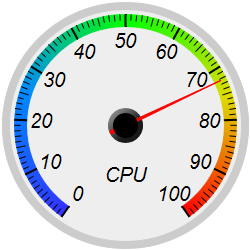

This example demonstrates the basic steps in creating a round meter.
A round meter can be created with the following steps:
- Create an AngularMeter object using AngularMeter.AngularMeter. In this example, the background color is set Transparent.
- Specify the geometry of the meter scale using AngularMeter.setMeter. This specifies the center, the radius, and the starting and ending angles of the meter scale.
- Optionally add a background and/or a border using AngularMeter.addRing.
- Set the numeric scale of the meter using BaseMeter.setScale
- Optionally configures the label style using BaseMeter.setLabelStyle, the tick length using BaseMeter.setTickLength and the tick width using BaseMeter.setLineWidth.
- Optionally add a color scale to the meter using BaseMeter.addColorScale. Whereas the meter scale displays the values with text labels, a color scale represents the values with different colors.
- Optionally add additional labels to the meter using BaseChart.addText.
- Add a "new style" pointer to the meter using AngularMeter.addPointer2. For compatibility with earlier versions of ChartDirector, classical pointers are still supported using the previous method BaseMeter.addPointer.